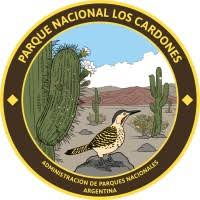
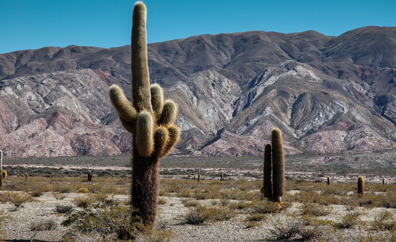
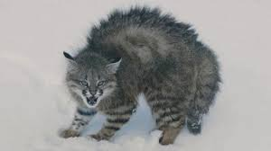
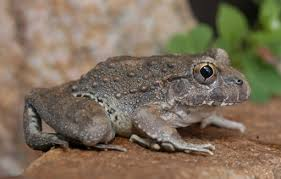
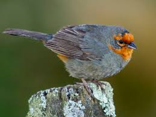
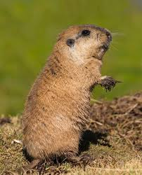
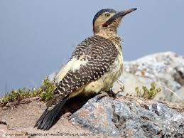
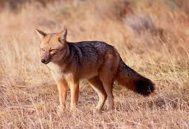
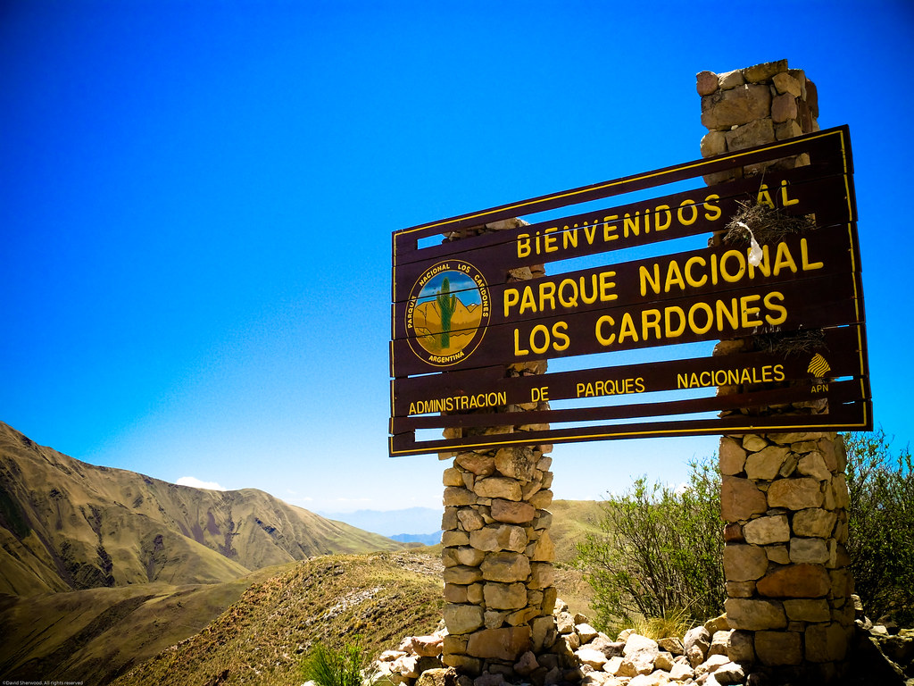

A continuacion veremos y analizaremos un poco acerca de la fauna y flora desarrollada en este parque nacional.

La vegetación predominante es la de la provincia fitogeográfica Prepuneña, conformada principalmente por cardones nombre local dado a los grandes cactos de la especie Echinopsis atacamensis, aunque también se encuentran especies características del distrito fitogeográfico del Monte de Sierras y Bolsones de la provincia
¿Que son los Cardones?
El cardo (Cynara cardunculus) es una planta herbácea perenne de la familia de los cardos, emparentada con el girasol y la alcachofa . El cardo es originario del Mediterráneo, pero se cultiva en todo el mundo por sus peciolos comestibles, que se parecen a los gruesos tallos del apio,con flores con puntas afiladas en los tallos y hojas. Es originario de la región mediterránea. El cardo bendito contiene sustancias químicas llamadas taninos, que pueden ayudar con la diarrea, la tos y la hinchazón
En muchos países latinoamericanos, se denomina cardón a múltiples tipos de cactos o cactus. Los cardones, de este modo, son especies que crecen en regiones con clima desértico y que se caracterizan por las espinas que protegen a su tallo globoso. Los cactus son plantas suculentas que pertenecen a la familia Cactaceae.
El crecimiento promedio de un cardón es de 1 a 5 centímetros por año, cuando han cumplido medio siglo de vida,la longevida podría alcanzar hasta 300 años.

Fauna
En cuanto a la fauna, habitan especies amenazadas como el gato del pajonal, la monterita serrana o el zorro colorado. Otros habitantes son el tuco tuco puneño, el yasto, la culebra andina y la ranita de las piedras.
A continuacion observaran una serie de imagenes de algunos de los animales que habitan en este parque

Gato Pajonal

Rana de las Piedras

Monterita Serrana

Tuco,Tuco

Yasto

Zorro Colorado
DATO IMPORTANTE
Los mamíferos están representados por especies como el guanaco,
el zorro gris y el chinchillón, mientras que también destacan
aves como el cóndor andino y el guaipo. Abundantes restos
arqueológicos dan una idea de la importancia histórica de estos
ambientes para el hombre.
El Parque alberga una gran variedad de especies de fauna, algunas de las cuales se encuentran en peligro de extinción. Entre estas especies amenazadas se encuentran el gato del pajonal (Leopardus pajeros), la monterita serrana (Poospiza baeri) y el zorro colorado (Pseudalopex culpeus).

El Parque Nacional Los Cardones se haya en el departamento de Cachi, al centro oeste de la provincia de Salta
El Parque Nacional Las Cardones es más que un simple destino turístico; es un espacio que encarna la riqueza de la biodiversidad argentina, la herencia cultural de sus pueblos y la importancia de la conservación. Visitar este parque es una invitación a reflexionar sobre nuestra relación con la naturaleza y el legado que dejaremos para las futuras generaciones.